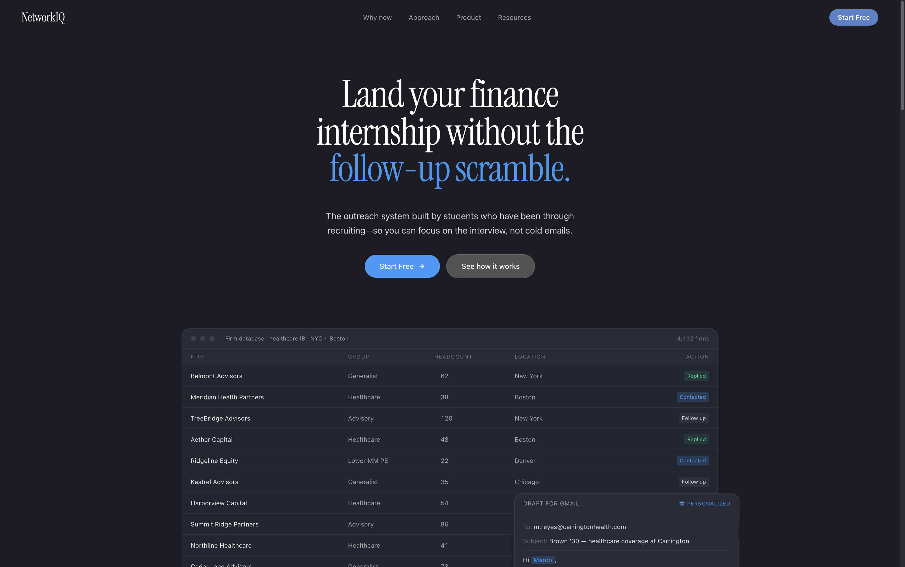

Built a website that raised $16k in one month for a grassroots PAC formed by a group of neighbors. Featured in The SF Chronicle.
Built a website that raised $16k in one month for a grassroots PAC formed by a group of neighbors. Featured in The SF Chronicle.

Automated cold outreach for students going into finance. Message me for beta access.